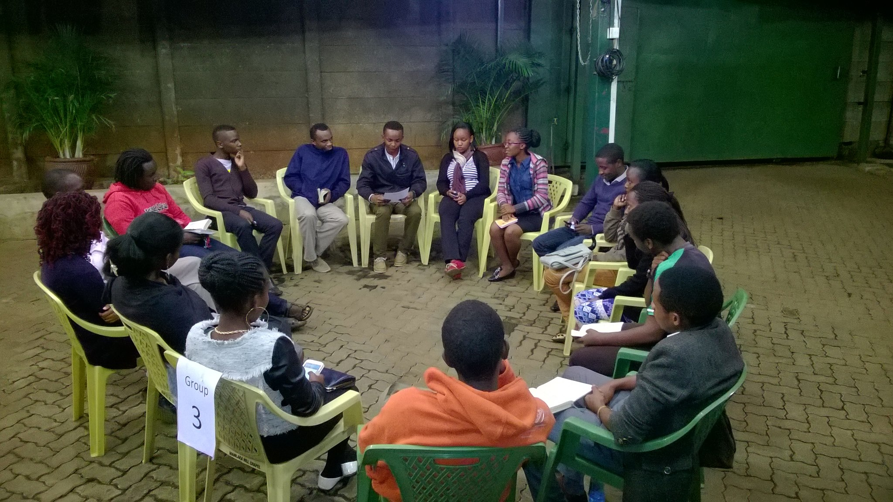

Limitless youth ministry was birthed out of the felt need to reach out to college age youth (18-25 year olds) who form a significant part of the population of Nairobi city and its environs.
Apart from the University of Nairobi student populace (predominantly served by the SALT ministry), Mamlaka Hill Chapel is within walking distance of several other Colleges and University campuses whose student population is mainly un-churched and unreached. Limitless exists to reach that particular demographic.
Our key aim is to evangelize, disciple and equip young people to reach other young people with the love of Christ. We hold firmly that in today’s world, peer influence is a key factor in youth behavior and so we seek to use that to our advantage.
LIMITLESS seeks to address real issues facing today’s youth with the word of God. The Bible is our guide and we unapologetically champion the Biblical world view on life and beyond.
LIMITLESS was launched on the 30th of October 2011.
Limitless has a number of ministries that enables Limitless members to be faithfully plugged in and to be active soldiers of Christ. All limitlessers are encouraged to join a ministry and use their gifts, talents and resources to serve God.
Sung worship is one of the ways we get to praise God and enjoy being in His presence. Our worship team is headed by Laura and has a team of committed worshippers consisting of vocalists and instrumentalists.

The Prayer Corner team is available after every Sunday service at Mamlaka to pray with anyone who comes to ask for prayer. We are ready to share your joys and thanksgivings, and to lift up your needs to the Lord.

Our aim is to care for the Mamlaka congregation by providing prayer, pastoral counseling, and bringing comfort in times of bereavement.
in charge of;
The production of the Audio Visual Announcements
The Weekly Bulletin
The management of the Mamlaka Hill Website Website
Distribution of the Sermon CDs
Branding of Mamlaka Hill Chapel
Photograhy and videography

Acts 2:41-47
Christian community is the people of God doing life deeply together. It is the alternative to brokeness in the world.
Do I value Christian community
We have our services every Sunday 12:00- 2:00 pm at Nairobi Primary. You are welcomed t join us
Phone:0717111111